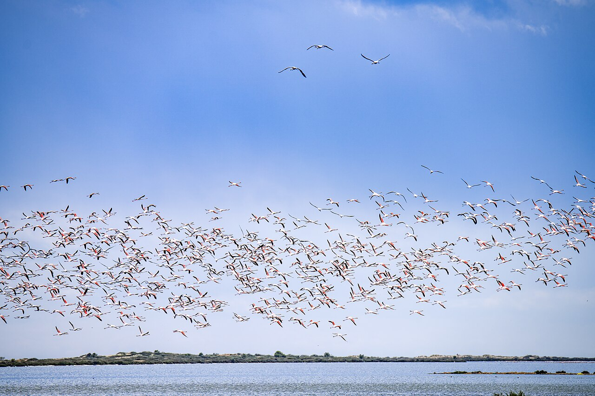

بروتوكول موحّد يوثّق الشباك والفخاخ والطيور المصابة والنافقة ويجمع المشاهدات الميدانية في قاعدة بيانات مشتركة
أعلن معهد «تور دو فالا» في 17 تشرين الثاني/نوفمبر 2026 إطلاق منصة رقمية لشبكة الطيور المائية في المتوسط «ROEM»، تجمع معلومات رصد الصيد غير القانوني للطيور المائية في ثماني دول، بينها المغرب والجزائر وتونس وليبيا، إلى جانب ألبانيا وصربيا ومقدونيا الشمالية وتركيا.
وتستند المنصة إلى بروتوكول موحّد يتيح تسجيل المشاهدات الميدانية ومقارنتها بين المواقع والبلدان، للمساعدة في تحديد بؤر المخالفات وتوجيه جهود حماية الطيور على امتداد مسارات هجرتها.
ماذا يرصد البروتوكول
يدمج البروتوكول رصد مؤشرات الصيد غير القانوني في التعدادات الشتوية للطيور المائية، مستفيدًا من وجود فرق المراقبة في الأراضي الرطبة. وتُضاف إلى بيانات الموقع وتوقيت الزيارة وظروفها مشاهدات تتعلق بالصيادين أو أصوات إطلاق النار في الأماكن والأوقات التي يُحظر فيها الصيد، وبالشباك والفخاخ ووسائل استدراج الطيور.
ويشمل التوثيق بقايا الذخائر، والمخابئ المستحدثة عندما يمكن تحديد عدم قانونيتها، والطيور والحيوانات المصابة أو النافقة، مع تسجيل الأعداد والحالة. كما تُبيّن الاستمارة ما إذا كانت الوقائع قد أُبلغت إلى السلطات المختصة، بما يساعد على متابعة الاستجابة للمخالفات.
وتُسجّل نتائج الزيارة أيضًا عند عدم رصد مؤشرات على هذه الممارسات. وتتيح الطريقة المشتركة قراءة المشاهدات في سياق موقعها وتوقيتها وطبيعتها، بدل جمع وقائع متفرقة يصعب مقارنتها.

من التجارب الميدانية إلى قاعدة مشتركة
بدأ برنامج الرصد عام 2023، واستفاد بروتوكوله من تجارب أولية في تونس وألبانيا وصربيا. وتُدمج البيانات في المنصة مع إدخالها ميدانيًا، لتغذية ملخصات على مستوى كل دولة وعلى مستوى الشبكة، إلى جانب مراجع متخصصة في الموضوع.
وتشمل المخالفات التي تتناولها المنصة صيد الأنواع المحمية، والصيد خارج الفترات المسموحة أو داخل المناطق المحظورة، واستخدام تقنيات ممنوعة. وتكتسب معرفة طبيعة الممارسة ومكانها وتكرارها أهمية في تحديد أولويات الرقابة والحماية.

ورشة تونس وتبادل الخبرات
وفي سياق التعاون الإقليمي لمكافحة قتل الطيور وأسرها والاتجار بها بصورة غير قانونية، استضافت تونس بين 16 و18 تشرين الأول/أكتوبر 2026 ورشة نظّمتها جمعية أحباء الطيور في تونس وجمعية حماية ودراسة الطيور في صربيا، ضمن مشاريع «PROZHUM».
وبحسب الجمعية الليبية للطيور المشاركة في الورشة، ضمّ اللقاء منظمات وجمعيات من بلدان عربية وأوروبية، بينها لبنان. وعرض المشاركون تجاربهم في الرصد والتوثيق والتوعية والتعاون مع الجهات المختصة، فيما تناول العرض الليبي التشريعات الوطنية وجهود حماية الطيور.
وشملت الأنشطة زيارتين ميدانيتين إلى سبخة سليمان وسبخة قربة في تونس، جمعتا مراقبة الطيور المائية وتوثيق مؤشرات القتل غير القانوني. وتُظهر هذه الممارسة كيف يمكن لزيارة مخصّصة لعدّ الطيور أن توفّر أيضًا معلومات عن التهديدات التي تواجهها في مواقع استراحتها وتغذيتها.
Tour du Valat — ROEM · ROEM — Monitoring protocol · Libyan Society for Birds — Tunis workshop
الصور: السعودية — واس؛ تونس — Skander zarrad / Wikimedia Commons (الصورتان CC BY-SA 4.0)؛ لبنان — مكشاب. · 1 · 2 · https://creativecommons.org/licenses/by-sa/4.0/